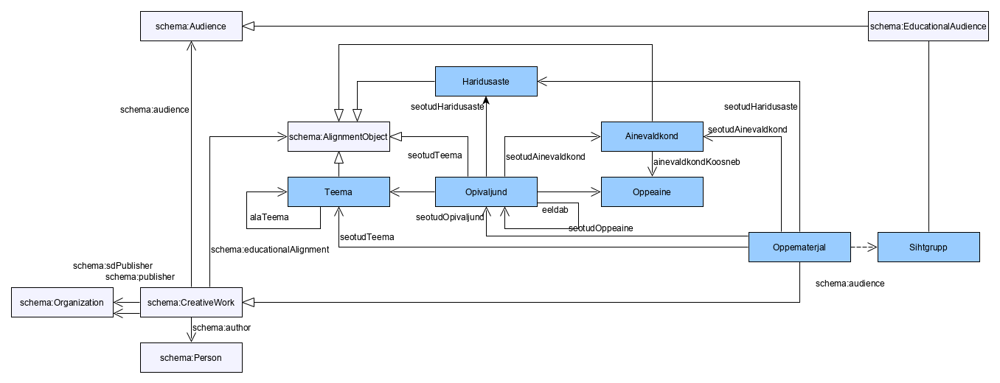

Hariduse ontoloogia on nurgakiviks personaalse õpiraja taristu realiseerimisel ja juurutamisel.
Standard on avatud kolmandate osapoolte laiendusteks kas siis teiste kultuuriruumide / riikide eripärade või Eesti riiklikus õppekavas nimetamata õpitulemuste kirjeldamiseks. Samuti on standard avatud teiste hariduse valdkonna aspektide kirjeldamiseks.
Alloleval joonisel on toodud välja peamised õppematerjali semantiliseks kirjeldamiseks vajalikud klassid ja nendevahelised seosed.

See sõnastik defineerib 28 klassi ja 14 omadust.
| Termini nimi | Liik | Definitsioon |
|---|---|---|
| SubjectSyllabus | klass | Dokument, mis hõlmab ühe aine õppe-eesmärgid, õppesisu, metoodika ja hindamise põhimõtted. |
| SubjectArea | klass | Lähedase eesmärgiseade ja õppesisuga õppeained moodustavad ainevaldkonna. Ainevaldkonnad on järgmised: 1) keel ja kirjandus; 2) võõrkeeled; 3) matemaatika; 4) loodusained; 5) sotsiaalained; 6) kunstiained; 7) kehaline kasvatus. Ainevaldkonna õppeainete õpetamise peamine eesmärk on vastava valdkonnapädevuse kujundamine. Valdkonnapädevuste kujunemist ning gümnaasiumi õppe- ja kasvatuseesmärkide saavutamist toetavad ainekavades esitatud õpitulemused, lõiming teiste ainevaldkondade õppeainetega ning tunni- ja kooliväline tegevus. NB alignmentType = educationalSubjectArea. |
| SubjectAreaCompetence | klass | |
| EducationLevel | klass | Hariduse omandamise järjestikune osa, selle iga (järgnev) osa (nt põhiharidus, keskharidus, kõrgharidus). NB alignmentType = educationalLevel. |
| Attitude | klass | Inimese kalduvus hinnata objektide (näit. isikute, sündmuste, nähtuste) olemust teatud määral soosival või mittesoosival viisil. See hinnang väljendub tavaliselt tunnetusliku (kognitiivse), emotsionaalse (afektiivse) või käitumusliku (konatiivse) reageeringuna. |
| IndividualCurriculum | klass | Individuaalne õppekava on Individuaalse õppekava järgi õppimise korra kohaselt hariduslike erivajadustega õpilase jaoks koostatud õppekava, mis loob õpilasele tingimused võimetekohaseks õppimiseks ja arenemiseks. Individuaalne õppekava koostatakse õpilasele, kellel on raskusi oma klassikaaslastega samal ajal samas ruumis või vastavale klassile koostatud töökava alusel töötada. Hariduslikeks erivajadusteks võivad olla õpilase eriline andekus, õpi- ja käitumisraskused, terviserikked, puuded või pikemaaegne õpikeskkonnast eemal viibimine. |
| ClassTest | klass | Õppepäevas võib läbi viia ühe kontrolltöö. Kontrolltöö toimumise ajast teatatakse õpilastele vähemalt viis õppepäeva enne kontrolltöö toimumist. Õppenädalas võib läbi viia kuni kolm kontrolltööd. Kontrolltöid ei planeerita esmaspäevale ja reedele, samuti õppepäeva esimesele ning viimasele õppetunnile, v.a juhul, kui õppeaine on tunniplaanis esmaspäeval ja reedel või ainult ühel neist päevadest või esimese või viimase tunnina. |
| Training | klass | Kavandatud süsteemne õpe, mille käigus antakse edasi kindlaid oskusi, teadmisi ja infot ning kujundatakse hoiakuid ja suhtumisi. |
| Question | klass | Üksikküsimus testis. |
| TeacherWorkPlan | klass | Töökava on õpetajale igapäevane abivahend, mis võimaldab tal õppeprotsessi kavandada ja analüüsida ning iseennast hinnata. Töökava on dokument, mille alusel toimub õppetöö tundides. |
| LearningPath | klass | Õppija poolt läbitud tee, mis sisaldab (e-)õppe tegevusi, mis võimaldavad teadmiste, oskuste ja pädevuste järjepidevat omandamist. |
| LearningAssessment | klass | Kellegi teadmistele, oskustele, võimetele, töötulemustele antud hinnang, mida väljendatakse numbrites, tähtedes, punktides vm hindamisühikutes. Lihtsustatult, õpitulemus esitab õpiväljundi saavutatuse taset. Eksami või arvestuse sooritus. |
| LearningOutcome | klass | Õppimise tulemusena omandatavad teadmised, oskused ja hoiakud või nende kogumid (pädevused), mille olemasolu ja/või saavutatuse taset on võimalik tõendada ja hinnata. Nt "oskab liita 10 piires". NB alignmentType = teaches. |
| Subject | klass | Õppeasutuses õpetatav teadus-, tehnika-, kunsti- vm ala. |
| SchoolCurriculum | klass | Õppeasutuse õppekava on õppe- ja kasvatustegevuse alusdokument, milles kirjeldatakse õppe rõhuasetused ja tegevused õppekava täitmiseks. |
| Curriculum | klass | Õppe ja kasvatuse alusdokument, mis määrab õppe- ja kasvatuseesmärgid, õppe sisu ja mahu, metoodika põhimõtted ning hindamise alused, nõuded õppekeskkonnale vms. |
| LearningMaterial | klass | Nii digitaalsel kui muul kujul õppematerjal. Digitaalsel kujul avaldatud õppematerjal on nt: e-õpik, õpiotstarbeline veebivideo ja mobiilirakendus, õpimäng, e-tööleht, veebipõhine test, õpiobjekt. |
| Skill | klass | Võime rakendada teadmisi ja kasutada neid ülesannete täitmisel ja probleemide lahendamisel. |
| Competence | klass | Teadmiste, oskuste ja hoiakute kogum, mis tagab suutlikkuse teatud tegevusalal või -valdkonnas loovalt, ettevõtlikult ja paindlikult toimida. |
| NationalCurriculum | klass | Hariduse eesmärkide elluviimise riiklik plaan, mis annab ülevaate sellest, milleks, mida, kuidas ja millise aja jooksul õpitakse ning õpetatakse. |
| EducationalAudience | klass | Elanikkonna rühm, mille vajadusi silmas pidades on õppematerjal loodud. |
| LevelTest | klass | Kokkuvõttev test, kokkulepitud astme (kooliastme) lõpus saavutatud oskused ja teadmised; kooliastme lõpus teadmiste ja oskuste omandatust kontrolliv üleriigiline töö. |
| Knowledge | klass | Õpingutega või kogemustest omandatud faktide, reeglite, seaduspärasuste jms tundmine. |
| Topic | klass | Aine sisuühik, mida õpetatakse a'la "2. maailmasõda ajaloos" või "Geomeetria". Teemad on kasutusel õppematerjalide lõimimiseks. NB alignmentType = educationalSubject. |
| Test | klass | Hindamisvahend kokkulepitud eesmärgi hindamiseks. Nt ülesannete kogum; standardiseeritud ülesannete või küsimuste kogum, millega uuritakse ja hinnatakse inimese võimeid ja omadusi või teadmisi ja oskusi. |
| LessonQuiz | klass | Väikesemahuline kirjalik töö tunnis õpitu kontrollimiseks ja hindamiseks. |
| Task | klass | Kohustusena antud töö; harjutustöö koolis. Ülesanne koosneb tööjuhendist, (üksik)küsimustest ja vastustest. Kasutusel ka hindamisvahendina. |
| Answer | klass | Üksikküsimuse vastus testis. |
| Occupation | klass | A job or profession: a set of tasks and duties that a person performs for a living. |
| Activity | klass | Iseseisva tähendusega, tulemusele suunatud ja mõõdetav soorituse kirjeldus, mis kirjeldab selgepiirilise ja tervikliku tegevuse või tööosa tegemist ning mille kaudu kompetents avaldub või on hinnatav. |
| Knobit | klass | Õppimist ja hindamist vääriv väikseim iseseisvat tähendust kandev teadmise, oskuse või hoiaku ühik, mida kasutatakse õpiväljundi või tegevusnäitaja sisulisteks osadeks lahutamiseks. |
| includesSubject | omadus | Ainevaldkond sisaldab vähemalt ühte, kuid enamasti rohkemat, õppeainet. |
| hasSubtopic | omadus | Teema alamosa, a'la "Tasandilised kujundid". |
| hasPrerequisite | omadus | Õpiväljundi omandamiseks on vajalik teine õpiväljund, nt oskuse jaoks on vajalik teadmine. |
| assesses | omadus | Ülesanne hindab mil määral on õpitulemus omandatud. Küsimus hindab kas konkreetse küsimusega seotud õpitulemus on saavutatud või mitte. |
| kooliaste | omadus | Hariduse omandamise järjestikune alajaotus, selle iga (järgnev) osa. Kooliastmed on: 1) I kooliaste – 1.–3. klass; 2) II kooliaste – 4.–6. klass; 3) III kooliaste – 7.–9. klass; 4) gümnaasium – 10.–12. klass. Põhikooli kooliastmed on: 1) I kooliaste – 1.–3. klass; 2) II kooliaste – 4.–6. klass; 3) III kooliaste – 7.–9. klass. |
| isPrerequisiteOf | omadus | Õpiväljund on eelduseks teis(t)ele õpiväljundi(te)le. |
| relatedSubjectArea | omadus | Õpiväljundit võidakse kasutada erinevates ainevaldkondades riikliku õppekava kontekstis. Õpiväljund ei pea olema seotud ainevaldkonnaga. Õppematerjal võib olla seotud ainevaldkondadega. |
| relatedEducationLevel | omadus | Õppematerjal on mõeldud või õpiväljund on planeeritud konkreetsele haridusastmele. |
| relatedLearningOutcome | omadus | Õpiväljundit võidakse kasutada erinevates ainevaldkondades riikliku õppekava kontekstis. Õpiväljund ei pea olema seotud ainevaldkonnaga. Õppematerjal on seotud konkreetsete õpiväljundite saavutamisega. Minimaalselt on õppematerjaliga seotud üks õpiväljund. |
| relatedSubject | omadus | Õpiväljund ei pea olema seotud ühegi õppeainega ja võib olla seotud mitme õppeainega. |
| relatedTopic | omadus | Õpiväljund ei pea olema ühegi teemaga, kuid teema raames käsitletakse vähemalt ühte õpiväljundit. Õppematerjal võib olla seotud teemadega. |
| hasTask | omadus | Test koosneb vähemalt ühest ülesandest. |
| requiresCompetence | omadus | A competence that is needed to work in this occupation. |
| consistsOf | omadus | Pädevus koosneb tegevusnäitajatest: pädevuse demonstreerimine toimub läbi tegevusnäitajate rakendamise. |
| includesKnobit | omadus | A knobit that is part of this learning outcome. |
| requiresKnobit | omadus | Knobit, mida on vaja selle tegevuse sooritamiseks. |
| dependsOnKnobit | omadus | Seob knobiti teise knobitiga, mille omandamine või rakendamine on esimese knobiti omandamise või rakendamise eelduseks. Suund: A eeldab B-d tähendab, et B on A eeltingimus. |
| includesLearningOutcome | omadus | Õpiraja koosseisu kuuluv õpiväljund. Õpiraja struktuuri moodustavad sellesse kuuluvate õpiväljundite vahelised eeldusseosed (hasPrerequisite). |
| assessesLearningOutcome | omadus | Õpiväljund, mille saavutatust ülesandega hinnatakse, nt diagnostilise testi ülesandena. |
| answeredBy | omadus | Isik, kes vastuse andis. |
| answersItem | omadus | Ülesanne või küsimus, millele vastus on antud. |
| isCorrect | omadus | Kas vastus loeti õigeks. |
| aboutLearningOutcome | omadus | Õpiväljund, mille saavutatust õpitulemus kirjeldab. |
| assessedPerson | omadus | Isik, kelle õppimist õpitulemus kirjeldab. |
| basedOnAnswer | omadus | Vastus, millel õpitulemus põhineb. |
| masteryStatus | omadus | Õpiväljundi omandatuse olek omandatuse olekute loendist (https://schema.edu.ee/omandatus): omandatud, valmis õppima, veel mitte või ebaselge. |
| masteryProbability | omadus | Hinnanguline tõenäosus vahemikus 0 kuni 1, et isik on õpiväljundi omandanud. |
| hasQuestion | omadus | Ülesanne koosneb vähemalt ühest üksikküsimusest. |
| vanuseaste | omadus | Vanuse teatav alajaotus; selles vanuses inimesed. |
Dokument, mis hõlmab ühe aine õppe-eesmärgid, õppesisu, metoodika ja hindamise põhimõtted.
| URI: | https://schema.edu.ee/SubjectSyllabus |
|---|---|
| Pealkiri: | Ainekava@et |
| Ülemklass: | https://schema.edu.ee/Curriculum |
Lähedase eesmärgiseade ja õppesisuga õppeained moodustavad ainevaldkonna. Ainevaldkonnad on järgmised: 1) keel ja kirjandus; 2) võõrkeeled; 3) matemaatika; 4) loodusained; 5) sotsiaalained; 6) kunstiained; 7) kehaline kasvatus. Ainevaldkonna õppeainete õpetamise peamine eesmärk on vastava valdkonnapädevuse kujundamine. Valdkonnapädevuste kujunemist ning gümnaasiumi õppe- ja kasvatuseesmärkide saavutamist toetavad ainekavades esitatud õpitulemused, lõiming teiste ainevaldkondade õppeainetega ning tunni- ja kooliväline tegevus. NB alignmentType = educationalSubjectArea.
| URI: | https://schema.edu.ee/SubjectArea |
|---|---|
| Pealkiri: | Ainevaldkond@et ja Subject area@en |
| Omadused: | https://schema.edu.ee/includesSubject |
| Kasutatud: | https://schema.edu.ee/relatedSubjectArea |
| Ülemklass: | https://schema.org/AlignmentObject |
| URI: | https://schema.edu.ee/SubjectAreaCompetence |
|---|---|
| Pealkiri: | Ainevaldkonna pädevus@et |
| Ülemklass: | https://schema.edu.ee/Competence |
Hariduse omandamise järjestikune osa, selle iga (järgnev) osa (nt põhiharidus, keskharidus, kõrgharidus). NB alignmentType = educationalLevel.
| URI: | https://schema.edu.ee/EducationLevel |
|---|---|
| Pealkiri: | Haridusaste@et |
| Kasutatud: | https://schema.edu.ee/relatedEducationLevel |
| Ülemklass: | https://schema.org/AlignmentObject |
Inimese kalduvus hinnata objektide (näit. isikute, sündmuste, nähtuste) olemust teatud määral soosival või mittesoosival viisil. See hinnang väljendub tavaliselt tunnetusliku (kognitiivse), emotsionaalse (afektiivse) või käitumusliku (konatiivse) reageeringuna.
| URI: | https://schema.edu.ee/Attitude |
|---|---|
| Pealkiri: | Attitude@en ja Hoiak@et |
| Ülemklass: | https://schema.edu.ee/LearningOutcome |
Individuaalne õppekava on Individuaalse õppekava järgi õppimise korra kohaselt hariduslike erivajadustega õpilase jaoks koostatud õppekava, mis loob õpilasele tingimused võimetekohaseks õppimiseks ja arenemiseks. Individuaalne õppekava koostatakse õpilasele, kellel on raskusi oma klassikaaslastega samal ajal samas ruumis või vastavale klassile koostatud töökava alusel töötada. Hariduslikeks erivajadusteks võivad olla õpilase eriline andekus, õpi- ja käitumisraskused, terviserikked, puuded või pikemaaegne õpikeskkonnast eemal viibimine.
| URI: | https://schema.edu.ee/IndividualCurriculum |
|---|---|
| Pealkiri: | Individuaalne õppekava@et |
| Ülemklass: | https://schema.edu.ee/SubjectSyllabus |
Õppepäevas võib läbi viia ühe kontrolltöö. Kontrolltöö toimumise ajast teatatakse õpilastele vähemalt viis õppepäeva enne kontrolltöö toimumist. Õppenädalas võib läbi viia kuni kolm kontrolltööd. Kontrolltöid ei planeerita esmaspäevale ja reedele, samuti õppepäeva esimesele ning viimasele õppetunnile, v.a juhul, kui õppeaine on tunniplaanis esmaspäeval ja reedel või ainult ühel neist päevadest või esimese või viimase tunnina.
| URI: | https://schema.edu.ee/ClassTest |
|---|---|
| Pealkiri: | Kontrolltöö@et |
| Ülemklass: | https://schema.edu.ee/Test |
Kavandatud süsteemne õpe, mille käigus antakse edasi kindlaid oskusi, teadmisi ja infot ning kujundatakse hoiakuid ja suhtumisi.
| URI: | https://schema.edu.ee/Training |
|---|---|
| Pealkiri: | Koolitus@et |
| Samaväärne klassiga: | https://schema.org/Course |
Üksikküsimus testis.
| URI: | https://schema.edu.ee/Question |
|---|---|
| Pealkiri: | Küsimus@et |
| Kasutatud: | https://schema.edu.ee/hasQuestion |
| Samaväärne klassiga: | https://schema.org/Question |
Töökava on õpetajale igapäevane abivahend, mis võimaldab tal õppeprotsessi kavandada ja analüüsida ning iseennast hinnata. Töökava on dokument, mille alusel toimub õppetöö tundides.
| URI: | https://schema.edu.ee/TeacherWorkPlan |
|---|---|
| Pealkiri: | Õpetaja töökava@et |
| Ülemklass: | https://schema.edu.ee/Curriculum |
Õppija poolt läbitud tee, mis sisaldab (e-)õppe tegevusi, mis võimaldavad teadmiste, oskuste ja pädevuste järjepidevat omandamist.
| URI: | https://schema.edu.ee/LearningPath |
|---|---|
| Pealkiri: | Õpirada@et ja Learning path@en |
Kellegi teadmistele, oskustele, võimetele, töötulemustele antud hinnang, mida väljendatakse numbrites, tähtedes, punktides vm hindamisühikutes. Lihtsustatult, õpitulemus esitab õpiväljundi saavutatuse taset. Eksami või arvestuse sooritus.
| URI: | https://schema.edu.ee/LearningAssessment |
|---|---|
| Pealkiri: | Learning assessment@en ja Õpitulemus@et |
| Kasutatud: | https://schema.edu.ee/assesses |
Õppimise tulemusena omandatavad teadmised, oskused ja hoiakud või nende kogumid (pädevused), mille olemasolu ja/või saavutatuse taset on võimalik tõendada ja hinnata. Nt "oskab liita 10 piires". NB alignmentType = teaches.
| URI: | https://schema.edu.ee/LearningOutcome |
|---|---|
| Pealkiri: | Learning outcome@en ja Õpiväljund@et |
| Omadused: | https://schema.edu.ee/isPrerequisiteOf ja https://schema.edu.ee/hasPrerequisite |
| Kasutatud: | https://schema.edu.ee/relatedLearningOutcome, https://schema.edu.ee/isPrerequisiteOf ja https://schema.edu.ee/hasPrerequisite |
| Ülemklass: | https://schema.org/AlignmentObject |
Õppeasutuses õpetatav teadus-, tehnika-, kunsti- vm ala.
| URI: | https://schema.edu.ee/Subject |
|---|---|
| Pealkiri: | Subject@en ja Õppeaine@et |
| Kasutatud: | https://schema.edu.ee/relatedSubject ja https://schema.edu.ee/includesSubject |
Õppeasutuse õppekava on õppe- ja kasvatustegevuse alusdokument, milles kirjeldatakse õppe rõhuasetused ja tegevused õppekava täitmiseks.
| URI: | https://schema.edu.ee/SchoolCurriculum |
|---|---|
| Pealkiri: | Õppeasutuse õppekava@et |
| Ülemklass: | https://schema.edu.ee/Curriculum |
Õppe ja kasvatuse alusdokument, mis määrab õppe- ja kasvatuseesmärgid, õppe sisu ja mahu, metoodika põhimõtted ning hindamise alused, nõuded õppekeskkonnale vms.
| URI: | https://schema.edu.ee/Curriculum |
|---|---|
| Pealkiri: | Curriculum@en ja Õppekava@et |
Nii digitaalsel kui muul kujul õppematerjal. Digitaalsel kujul avaldatud õppematerjal on nt: e-õpik, õpiotstarbeline veebivideo ja mobiilirakendus, õpimäng, e-tööleht, veebipõhine test, õpiobjekt.
| URI: | https://schema.edu.ee/LearningMaterial |
|---|---|
| Pealkiri: | Learning material@en ja Õppematerjal@et |
| Ülemklass: | https://schema.org/CreativeWork |
Võime rakendada teadmisi ja kasutada neid ülesannete täitmisel ja probleemide lahendamisel.
| URI: | https://schema.edu.ee/Skill |
|---|---|
| Pealkiri: | Oskus@et ja Skill@en |
| Ülemklass: | https://schema.edu.ee/LearningOutcome |
Teadmiste, oskuste ja hoiakute kogum, mis tagab suutlikkuse teatud tegevusalal või -valdkonnas loovalt, ettevõtlikult ja paindlikult toimida.
| URI: | https://schema.edu.ee/Competence |
|---|---|
| Pealkiri: | Competence@en ja Pädevus@et |
| Ülemklass: | https://schema.edu.ee/LearningOutcome |
Hariduse eesmärkide elluviimise riiklik plaan, mis annab ülevaate sellest, milleks, mida, kuidas ja millise aja jooksul õpitakse ning õpetatakse.
| URI: | https://schema.edu.ee/NationalCurriculum |
|---|---|
| Pealkiri: | National curriculum@en ja Riiklik õppekava@et |
| Ülemklass: | https://schema.edu.ee/Curriculum |
Elanikkonna rühm, mille vajadusi silmas pidades on õppematerjal loodud.
| URI: | https://schema.edu.ee/EducationalAudience |
|---|---|
| Pealkiri: | Educational audience@en ja Sihtgrupp@et |
| Samaväärne klassiga: | https://schema.org/EducationalAudience |
Kokkuvõttev test, kokkulepitud astme (kooliastme) lõpus saavutatud oskused ja teadmised; kooliastme lõpus teadmiste ja oskuste omandatust kontrolliv üleriigiline töö.
| URI: | https://schema.edu.ee/LevelTest |
|---|---|
| Pealkiri: | Tasemetöö@et |
| Ülemklass: | https://schema.edu.ee/Test |
Õpingutega või kogemustest omandatud faktide, reeglite, seaduspärasuste jms tundmine.
| URI: | https://schema.edu.ee/Knowledge |
|---|---|
| Pealkiri: | Knowledge@en ja Teadmine@et |
| Ülemklass: | https://schema.edu.ee/LearningOutcome |
Aine sisuühik, mida õpetatakse a'la "2. maailmasõda ajaloos" või "Geomeetria". Teemad on kasutusel õppematerjalide lõimimiseks. NB alignmentType = educationalSubject.
| URI: | https://schema.edu.ee/Topic |
|---|---|
| Pealkiri: | Teema@et ja Topic@en |
| Omadused: | https://schema.edu.ee/hasSubtopic |
| Kasutatud: | https://schema.edu.ee/relatedTopic ja https://schema.edu.ee/hasSubtopic |
| Ülemklass: | https://schema.org/AlignmentObject |
Hindamisvahend kokkulepitud eesmärgi hindamiseks. Nt ülesannete kogum; standardiseeritud ülesannete või küsimuste kogum, millega uuritakse ja hinnatakse inimese võimeid ja omadusi või teadmisi ja oskusi.
| URI: | https://schema.edu.ee/Test |
|---|---|
| Pealkiri: | Test@en ja Test@et |
| Omadused: | https://schema.edu.ee/assesses ja https://schema.edu.ee/hasTask |
| Ülemklass: | https://schema.edu.ee/LearningMaterial |
Väikesemahuline kirjalik töö tunnis õpitu kontrollimiseks ja hindamiseks.
| URI: | https://schema.edu.ee/LessonQuiz |
|---|---|
| Pealkiri: | Tunnikontroll@et |
| Ülemklass: | https://schema.edu.ee/Test |
Kohustusena antud töö; harjutustöö koolis. Ülesanne koosneb tööjuhendist, (üksik)küsimustest ja vastustest. Kasutusel ka hindamisvahendina.
| URI: | https://schema.edu.ee/Task |
|---|---|
| Pealkiri: | Ülesanne@et |
| Omadused: | https://schema.edu.ee/hasQuestion |
| Kasutatud: | https://schema.edu.ee/hasTask |
| Ülemklass: | https://schema.edu.ee/LearningMaterial |
Üksikküsimuse vastus testis.
| URI: | https://schema.edu.ee/Answer |
|---|---|
| Pealkiri: | Vastus@et ja Answer@en |
| Samaväärne klassiga: | https://schema.org/Answer |
A job or profession: a set of tasks and duties that a person performs for a living.
| URI: | https://schema.edu.ee/Occupation |
|---|---|
| Pealkiri: | Amet@et ja Occupation@en |
| Samaväärne klassiga: | https://schema.org/Occupation |
Iseseisva tähendusega, tulemusele suunatud ja mõõdetav soorituse kirjeldus, mis kirjeldab selgepiirilise ja tervikliku tegevuse või tööosa tegemist ning mille kaudu kompetents avaldub või on hinnatav.
| URI: | https://schema.edu.ee/Activity |
|---|---|
| Pealkiri: | Tegevusnäitaja@et ja Activity@en |
Õppimist ja hindamist vääriv väikseim iseseisvat tähendust kandev teadmise, oskuse või hoiaku ühik, mida kasutatakse õpiväljundi või tegevusnäitaja sisulisteks osadeks lahutamiseks.
| URI: | https://schema.edu.ee/Knobit |
|---|---|
| Pealkiri: | Knobit@et ja Knobit@en |
Ainevaldkond sisaldab vähemalt ühte, kuid enamasti rohkemat, õppeainet.
| URI: | https://schema.edu.ee/includesSubject |
|---|---|
| Pealkiri: | Ainevaldkond sisaldab õppeainet@et ja Includes subject@en |
| Domeen: | https://schema.edu.ee/SubjectArea |
| Ulatus: | https://schema.edu.ee/Subject |
Teema alamosa, a'la "Tasandilised kujundid".
| URI: | https://schema.edu.ee/hasSubtopic |
|---|---|
| Pealkiri: | Alateema@et |
| Domeen: | https://schema.edu.ee/Topic |
| Ulatus: | https://schema.edu.ee/Topic |
Õpiväljundi omandamiseks on vajalik teine õpiväljund, nt oskuse jaoks on vajalik teadmine.
| URI: | https://schema.edu.ee/hasPrerequisite |
|---|---|
| Pealkiri: | Õpiväljundi eeldus@et |
| Domeen: | https://schema.edu.ee/LearningOutcome |
| Ulatus: | https://schema.edu.ee/LearningOutcome |
Ülesanne hindab mil määral on õpitulemus omandatud. Küsimus hindab kas konkreetse küsimusega seotud õpitulemus on saavutatud või mitte.
| URI: | https://schema.edu.ee/assesses |
|---|---|
| Pealkiri: | Hindab õpitulemuse saavutatust@et |
| Domeen: | https://schema.edu.ee/Test |
| Ulatus: | https://schema.edu.ee/LearningAssessment |
Hariduse omandamise järjestikune alajaotus, selle iga (järgnev) osa. Kooliastmed on: 1) I kooliaste – 1.–3. klass; 2) II kooliaste – 4.–6. klass; 3) III kooliaste – 7.–9. klass; 4) gümnaasium – 10.–12. klass. Põhikooli kooliastmed on: 1) I kooliaste – 1.–3. klass; 2) II kooliaste – 4.–6. klass; 3) III kooliaste – 7.–9. klass.
| URI: | https://schema.edu.ee/kooliaste |
|---|---|
| Pealkiri: | Kooliaste@et |
| Ulatus: | rdfs:Literal |
Õpiväljund on eelduseks teis(t)ele õpiväljundi(te)le.
| URI: | https://schema.edu.ee/isPrerequisiteOf |
|---|---|
| Pealkiri: | Õpiväljund on eelduseks@et |
| Domeen: | https://schema.edu.ee/LearningOutcome |
| Ulatus: | https://schema.edu.ee/LearningOutcome |
| Pöördomadus: | https://schema.edu.ee/hasPrerequisite |
Õpiväljundit võidakse kasutada erinevates ainevaldkondades riikliku õppekava kontekstis. Õpiväljund ei pea olema seotud ainevaldkonnaga. Õppematerjal võib olla seotud ainevaldkondadega.
| URI: | https://schema.edu.ee/relatedSubjectArea |
|---|---|
| Pealkiri: | Ainevaldkond, mille raames õpiväljundit või õppematerjali käsitletakse@et |
| Domeen: | Ühend, mis sisaldab #LearningOutcome või #LearningMaterial |
| Ulatus: | https://schema.edu.ee/SubjectArea |
Õppematerjal on mõeldud või õpiväljund on planeeritud konkreetsele haridusastmele.
| URI: | https://schema.edu.ee/relatedEducationLevel |
|---|---|
| Pealkiri: | Õppematerjali või õpiväljundiga seotud haridusaste@et |
| Domeen: | Ühend, mis sisaldab #LearningOutcome või #LearningMaterial |
| Ulatus: | https://schema.edu.ee/EducationLevel |
| Ülemomadus: | https://schema.org/educationalAlignment |
Õpiväljundit võidakse kasutada erinevates ainevaldkondades riikliku õppekava kontekstis. Õpiväljund ei pea olema seotud ainevaldkonnaga. Õppematerjal on seotud konkreetsete õpiväljundite saavutamisega. Minimaalselt on õppematerjaliga seotud üks õpiväljund.
| URI: | https://schema.edu.ee/relatedLearningOutcome |
|---|---|
| Pealkiri: | Teemaga või õppematerjaliga seotud õpiväljund@et |
| Domeen: | Ühend, mis sisaldab #LearningOutcome või #LearningMaterial |
| Ulatus: | https://schema.edu.ee/LearningOutcome |
Õpiväljund ei pea olema seotud ühegi õppeainega ja võib olla seotud mitme õppeainega.
| URI: | https://schema.edu.ee/relatedSubject |
|---|---|
| Pealkiri: | Õppeaine, mille raames õpiväljundit või teemat käsitletekse@et |
| Domeen: | Ühend, mis sisaldab #LearningOutcome või #LearningMaterial |
| Ulatus: | https://schema.edu.ee/Subject |
Õpiväljund ei pea olema ühegi teemaga, kuid teema raames käsitletakse vähemalt ühte õpiväljundit. Õppematerjal võib olla seotud teemadega.
| URI: | https://schema.edu.ee/relatedTopic |
|---|---|
| Pealkiri: | Teema, mille raames õpiväljundit või teemat käsitletakse@et |
| Domeen: | Ühend, mis sisaldab #LearningOutcome või #LearningMaterial |
| Ulatus: | https://schema.edu.ee/Topic |
Test koosneb vähemalt ühest ülesandest.
| URI: | https://schema.edu.ee/hasTask |
|---|---|
| Pealkiri: | Test koosneb ülesannetest@et |
| Domeen: | https://schema.edu.ee/Test |
| Ulatus: | https://schema.edu.ee/Task |
A competence that is needed to work in this occupation.
| URI: | https://schema.edu.ee/requiresCompetence |
|---|---|
| Pealkiri: | requires competence@en |
| Domeen: | https://schema.edu.ee/Occupation |
| Ulatus: | https://schema.edu.ee/Competence |
Pädevus koosneb tegevusnäitajatest: pädevuse demonstreerimine toimub läbi tegevusnäitajate rakendamise.
| URI: | https://schema.edu.ee/consistsOf |
|---|---|
| Pealkiri: | Koosneb tegevusnäitajatest@et ja consists of@en |
| Domeen: | https://schema.edu.ee/Competence |
| Ulatus: | https://schema.edu.ee/Activity |
A knobit that is part of this learning outcome.
| URI: | https://schema.edu.ee/includesKnobit |
|---|---|
| Pealkiri: | Sisaldab knobitit@et ja includes knobit@en |
| Domeen: | https://schema.edu.ee/LearningOutcome |
| Ulatus: | https://schema.edu.ee/Knobit |
Knobit, mida on vaja selle tegevuse sooritamiseks.
| URI: | https://schema.edu.ee/requiresKnobit |
|---|---|
| Pealkiri: | Nõuab knobitit@et ja requires knobit@en |
| Domeen: | https://schema.edu.ee/Activity |
| Ulatus: | https://schema.edu.ee/Knobit |
Seob knobiti teise knobitiga, mille omandamine või rakendamine on esimese knobiti omandamise või rakendamise eelduseks. Suund: A eeldab B-d tähendab, et B on A eeltingimus.
| URI: | https://schema.edu.ee/dependsOnKnobit |
|---|---|
| Pealkiri: | Eeldab knobitit@et ja depends on knobit@en |
| Domeen: | https://schema.edu.ee/Knobit |
| Ulatus: | https://schema.edu.ee/Knobit |
Õpiraja koosseisu kuuluv õpiväljund. Õpiraja struktuuri moodustavad sellesse kuuluvate õpiväljundite vahelised eeldusseosed (hasPrerequisite).
| URI: | https://schema.edu.ee/includesLearningOutcome |
|---|---|
| Pealkiri: | Sisaldab õpiväljundit@et ja includes learning outcome@en |
| Domeen: | https://schema.edu.ee/LearningPath |
| Ulatus: | https://schema.edu.ee/LearningOutcome |
Õpiväljund, mille saavutatust ülesandega hinnatakse, nt diagnostilise testi ülesandena.
| URI: | https://schema.edu.ee/assessesLearningOutcome |
|---|---|
| Pealkiri: | Hindab õpiväljundit@et ja assesses learning outcome@en |
| Domeen: | https://schema.edu.ee/Task |
| Ulatus: | https://schema.edu.ee/LearningOutcome |
Isik, kes vastuse andis.
| URI: | https://schema.edu.ee/answeredBy |
|---|---|
| Pealkiri: | Vastaja@et ja answered by@en |
| Domeen: | https://schema.edu.ee/Answer |
| Ulatus: | https://schema.org/Person |
Ülesanne või küsimus, millele vastus on antud.
| URI: | https://schema.edu.ee/answersItem |
|---|---|
| Pealkiri: | Vastab ülesandele@et ja answers item@en |
| Domeen: | https://schema.edu.ee/Answer |
| Ulatus: | https://schema.edu.ee/Task või https://schema.edu.ee/Question |
Kas vastus loeti õigeks.
| URI: | https://schema.edu.ee/isCorrect |
|---|---|
| Pealkiri: | On õige@et ja is correct@en |
| Domeen: | https://schema.edu.ee/Answer |
| Ulatus: | http://www.w3.org/2001/XMLSchema#boolean |
Õpiväljund, mille saavutatust õpitulemus kirjeldab.
| URI: | https://schema.edu.ee/aboutLearningOutcome |
|---|---|
| Pealkiri: | Hinnatav õpiväljund@et ja about learning outcome@en |
| Domeen: | https://schema.edu.ee/LearningAssessment |
| Ulatus: | https://schema.edu.ee/LearningOutcome |
Isik, kelle õppimist õpitulemus kirjeldab.
| URI: | https://schema.edu.ee/assessedPerson |
|---|---|
| Pealkiri: | Hinnatav isik@et ja assessed person@en |
| Domeen: | https://schema.edu.ee/LearningAssessment |
| Ulatus: | https://schema.org/Person |
Vastus, millel õpitulemus põhineb.
| URI: | https://schema.edu.ee/basedOnAnswer |
|---|---|
| Pealkiri: | Põhineb vastusel@et ja based on answer@en |
| Domeen: | https://schema.edu.ee/LearningAssessment |
| Ulatus: | https://schema.edu.ee/Answer |
Õpiväljundi omandatuse olek omandatuse olekute loendist (https://schema.edu.ee/omandatus): omandatud, valmis õppima, veel mitte või ebaselge.
| URI: | https://schema.edu.ee/masteryStatus |
|---|---|
| Pealkiri: | Omandatuse olek@et ja mastery status@en |
| Domeen: | https://schema.edu.ee/LearningAssessment |
| Ulatus: | http://www.w3.org/2004/02/skos/core#Concept |
Hinnanguline tõenäosus vahemikus 0 kuni 1, et isik on õpiväljundi omandanud.
| URI: | https://schema.edu.ee/masteryProbability |
|---|---|
| Pealkiri: | Omandatuse tõenäosus@et ja mastery probability@en |
| Domeen: | https://schema.edu.ee/LearningAssessment |
| Ulatus: | http://www.w3.org/2001/XMLSchema#decimal |
Ülesanne koosneb vähemalt ühest üksikküsimusest.
| URI: | https://schema.edu.ee/hasQuestion |
|---|---|
| Pealkiri: | Ülesanne koosneb üksikküsimustest@et |
| Domeen: | https://schema.edu.ee/Task |
| Ulatus: | https://schema.edu.ee/Question |
Vanuse teatav alajaotus; selles vanuses inimesed.
| URI: | https://schema.edu.ee/vanuseaste |
|---|---|
| Pealkiri: | Vanuseaste@et |